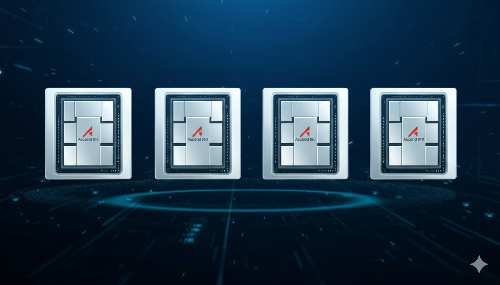

Monopoli Nvidia bakal terusik? Sepertinya iya. Kabar terbaru bilang kalau raksasa teknologi China, Huawei, udah siap ekspansi jualan chip AI mereka ke luar China.
Ascend 950: Senjata Baru Q1 2026
Bintang utamanya adalah Ascend 950. Chip ini rencananya bakal dirilis global mulai Kuartal 1 tahun 2026. Target pasarnya gak main-main:
- Korea Selatan (Start awal)
- Timur Tengah
- Asia Tenggara (ASEAN)
- Afrika
Incar Wilayah yang "Dipersulit" Nvidia
Strategi Huawei cerdik banget. Mereka nargetin wilayah-wilayah yang infrastruktur AI-nya belum mateng, atau negara yang kena imbas regulasi dan pajak tinggi buat beli produk Nvidia.
Jadi pas Nvidia sibuk sama regulasi ekspor AS, Huawei masuk nawarin alternatif.
Tantangan Terbesar: Software
Tapi jalannya gak bakal mulus-mulus amat. Skeptisme terbesar dateng dari sisi software support.
Dunia AI sekarang udah nyaman banget sama ekosistem CUDA-nya Nvidia. Pertanyaannya: "Developer mau gak migrasi ke CANN (Compute Architecture for Neural Networks) punya Huawei?"
Source: @jukan05 on X